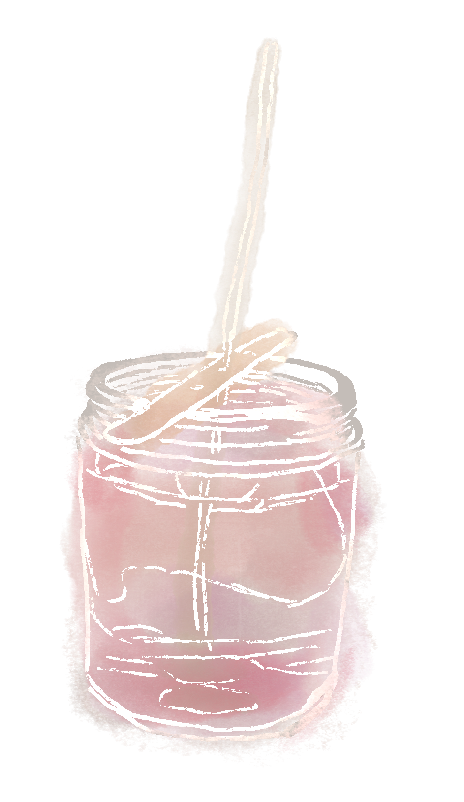

about


I created this project to share the warmth and joy that candle making gives me as I begin building my own candle business. This site is not only about the process of making candles, but also my own process as I learn and experiment with it myself.
Candles have always helped me while I work. The soft light eases my mind and helps me focus. I am also drawn to the flame itself and the gentle halo of light it creates around it.
Watching a flame feels calming and almost hypnotic, and I love the small glowing embers that appear inside it. I think they are beautiful. That quiet moment of warmth, light, and embers is what inspired the name of my candle business. This is how Belle Embers was born.
materials
Introduces the ingredients and tools used to make the candles, such as wax, fragrance oils, jars, moulds, and tools like thermometers and scales.
process
Shows the step by step method I use to make my candles, from measuring and melting wax to pouring, curing overnight, and adding decorative mould toppers.
fixes
Explains common candle making problems such as tunneling, frosting, and wet spots, and how they can be improved.
builder
An interactive page where visitors can design their own candle topper layouts before creating one themselves.